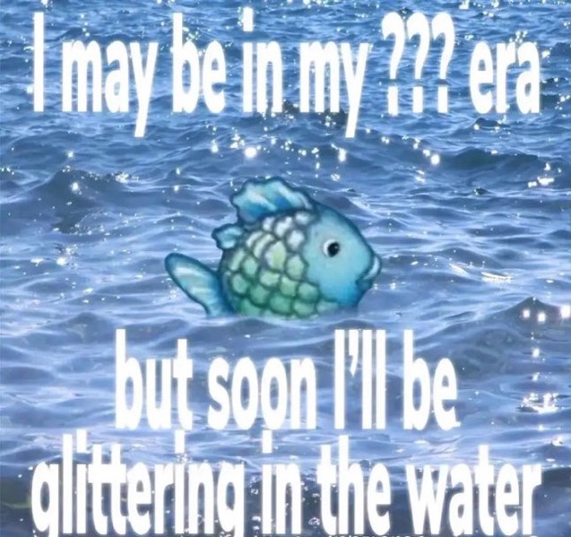
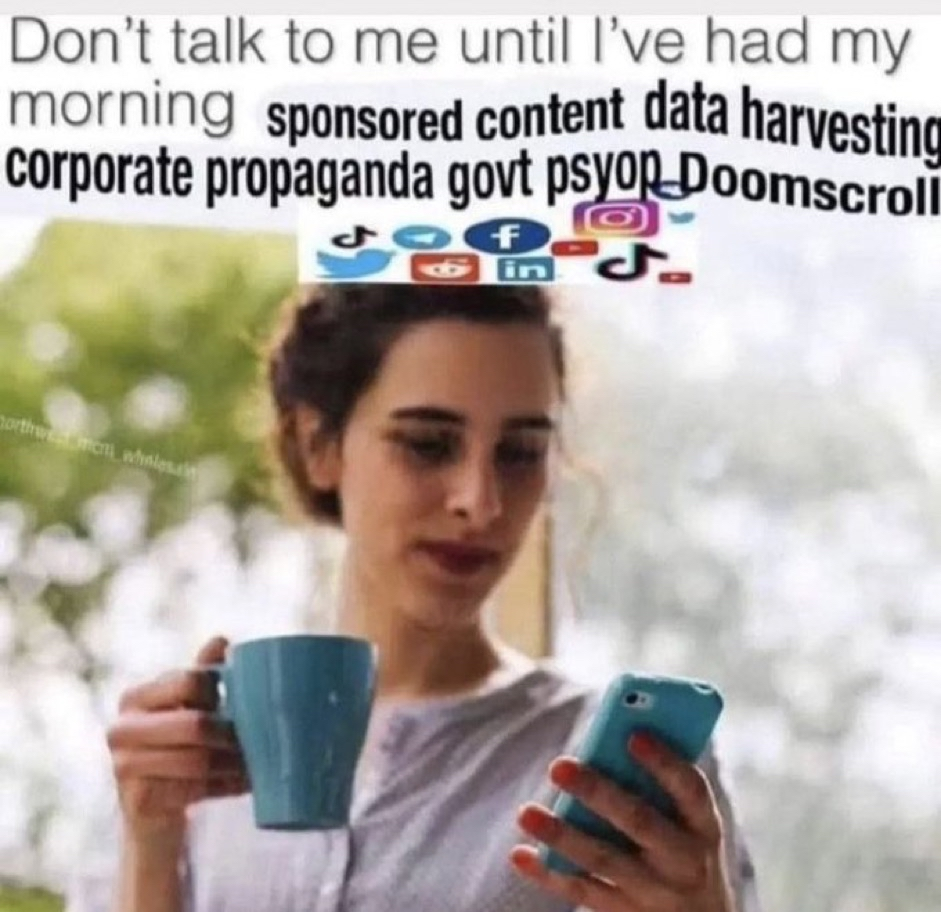

hello world :p

how beautiful it is to see these in the same world...
i'm not a poet nor a good meme-maker, but it's good to make things regardless.
here are the websites i made for this class :3
⋅.˳˳.⋅°˚°⋅.˳˳.⋅°˚°⋅.˳˳.⋅°˚°⋅.˳˳.⋅⋅.˳˳.⋅°˚°⋅.˳˳.⋅°˚°⋅.˳˳.⋅°˚°⋅.˳˳.⋅⋅.˳˳.⋅°˚°⋅.˳˳.⋅°˚°⋅.˳˳.⋅°˚°⋅.˳˳.⋅⋅.˳˳.⋅°˚°⋅.˳˳.⋅°˚°⋅.˳˳.⋅°˚°⋅.˳˳.⋅
⋅.˳˳.⋅°˚°⋅.˳˳.⋅°˚°⋅.˳˳.⋅°˚°⋅.˳˳.⋅⋅.˳˳.⋅°˚°⋅.˳˳.⋅°˚°⋅.˳˳.⋅°˚°⋅.˳˳.⋅⋅.˳˳.⋅°˚°⋅.˳˳.⋅°˚°⋅.˳˳.⋅°˚°⋅.˳˳.⋅⋅.˳˳.⋅°˚°⋅.˳˳.⋅°˚°⋅.˳˳.⋅°˚°⋅.˳˳.⋅
⋅.˳˳.⋅°˚°⋅.˳˳.⋅°˚°⋅.˳˳.⋅°˚°⋅.˳˳.⋅⋅.˳˳.⋅°˚°⋅.˳˳.⋅°˚°⋅.˳˳.⋅°˚°⋅.˳˳.⋅⋅.˳˳.⋅°˚°⋅.˳˳.⋅°˚°⋅.˳˳.⋅°˚°⋅.˳˳.⋅⋅.˳˳.⋅°˚°⋅.˳˳.⋅°˚°⋅.˳˳.⋅°˚°⋅.˳˳.⋅
1. a rant about “technology”
it’s interesting that someone as esteemed as le guin can be accused of “carefully avoiding technology” in their work. even the oldest surviving piece of literature is built on the literal word TECHNOLOGY. its meaning has narrowed, for sure, but king gilgamesh always stood for “techne” while enkidu represented the wildness of (human) nature. the idea of building human civilization is where we connect to the word “technology,” which was carved into clay by hand many many centuries ago.
“its technology is how a society copes with physical reality,” she says, and now it takes a very different form, but the concept itself stood ground since the earliest generations.
“we all can learn. that's the neat thing about technologies. they're what we can learn to do.”
i thought of gilgamesh right from the first paragraph— courtesy of my comparative lit eduction, and the text ending with the mention of bones resonates. it was technology to make clay tablets, to shape them, to create tools that could carve en epic about “the things we can learn to do” onto said tablets. and it is technology for me to type this on my laptop with my very own hands. just like how a lot of late 20th century sci-fi became real or plausible in the last few years, i’m also sure we’re living in a science fiction universe of people who couldn’t even imagine living past 30, telling each other the things they could do, even though it wasn’t time for it just yet.
2. my website is a shifting house next to a river of knowledge. what could yours be?
“my favorite aspect of websites is their duality: they’re both subject and object at once… what kind of room is a website? or is a website more like a house?”
i always had the idea of making a website that looks like my old bedroom back home. putting personal stuff on the bed, my work on the desk, weird stuff inside the closet, outside links on the window etc. thinking of website as a room makes it feel less daunting, like that confusing-code-stuff can also be my own. i guess a house could also work when i think of it in a broader sense. more pages, more storage, more life in it.
“websites are living, temporal spaces. what happens to websites after death, anyway?”
“i’m very concerned that our society is much more interested in information than wonder.”
metaphors are helpful to make the whole concept less scary. it still carries a certain mystique, but feels more within reach and within sense. it also connects to the le guin text, technologies are what we can learn to do, and a website certainly fits the definition.
3. a handmade web
“These are not artifacts of a dead web but rather, signposts on a map of a living web pointing to a web as it once was, a web in progress, a web in the making.”
“I evoke the term 'handmade web' in order to draw attention to the physical body”
“... to suggest slowness and smallness as a form of resistance”
this really does speak honestly about what the idea of the web was when i was little. small, slow, beautiful and honest. even learning the most basic html makes me feel very fond, like i did something with my own two hands, which, to an extent, is true. it gives the simple pleasure of creating from scratch again; it’s not common to come across this feeling as frequently as we wish nowadays.
I really enjoy Olia Lialina’s usage of “under construction” while referring to the earlier web. i think this sentiment still relates to the handmade web endeavor, and i have been enjoying it deeply.
4. against an increasingly user-hostile web
"near-instantaneous communication at a planetary scale. It was a big deal."
i still think about this often, and i do think these experiences still exist, it just takes a lot of effort-- moving through advertisements, news of every single terrible thing happening all at once, everyone trying to sell me things. i met my best friends on the internet, years go by and we live in different continents yet we talk every day, i think it's really beautiful to be able to communicate in this scale. i wish this was still the main point of the internet.
"But behind all this jargon lurks the uncomfortable idea that we might be accomplices in the destruction of a platform that was meant to empower and bring people together; the possibility that we are instead building a machine that surveils, subverts, manipulates, overwhelms and exploits people."
it’s just very upsetting to miss the era of hope in relation to the web. i have briefly tasted it as a kid, but i was a kid, so i always feel wronged to have it taken away from me as an adult. i think reading this reminded me of the hopelessness i feel in a way.
